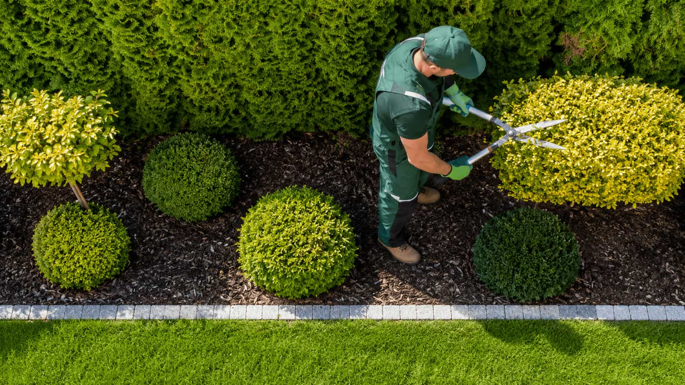
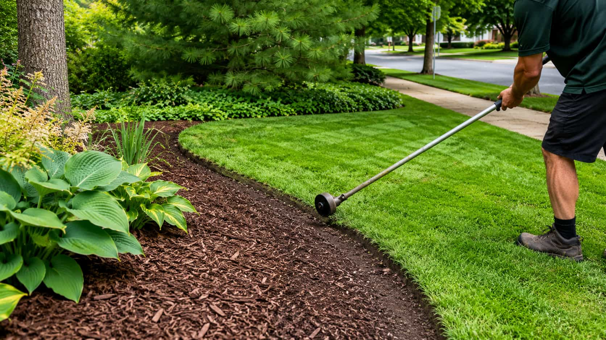

Maintenance
Choose this direction when regular upkeep, mowing, trimming, and grass height control are the main topics.

All Lawnora categories
Review Lawnora’s six lawn care request categories, choose the closest fit, and submit details to compare available local provider options. Lawnora is not a direct lawn care company.
Featured service grid
Each category page gives homeowners a clearer way to describe the request, compare questions, and understand what providers may confirm.

Maintenance Lawn Mowing & Maintenance Compare local provider options for recurring mowing, trimming, grass height control, and general upkeep. Useful when: regular lawn height and routine maintenance need to be discussed. Compare providers for: frequency, trimming, cleanup, access, and terms. View Category Treatment conversation Lawn Fertilization & Weed Control Compare providers for fertilization, weed control programs, nutrient support, and lawn appearance goals. Useful when: weeds, thin grass, or treatment planning need more clarity. Compare providers for: products, timing, safety notes, and follow-up. View Category Recovery Lawn Aeration & Overseeding Compare local providers for core aeration, overseeding, lawn thickening, and seasonal improvement. Useful when: compacted soil or thinning grass needs provider input. Compare providers for: method, timing, preparation, and watering expectations. View Category Seasonal prep Seasonal Yard Clean-Up Compare provider options for spring clean-up, fall clean-up, leaf removal, debris clearing, and yard preparation. Useful when: leaves, branches, debris, or seasonal buildup need attention. Compare providers for: included tasks, hauling, access, and schedule. View Category Repair Sod Installation & Lawn Repair Compare local provider options for sod installation, damaged lawn repair, bare patch improvement, and new lawn setup. Useful when: bare patches, damaged grass, or new areas need repair planning. Compare providers for: area size, prep, sod type, watering, and terms. View Category
Detail work Shrub, Hedge & Edge Care Compare providers for hedge trimming, shrub shaping, lawn edging, border cleanup, and polished yard details. Useful when: borders, hedges, shrubs, or edges need a cleaner look. Compare providers for: shaping scope, cleanup, access, and recurring options. View CategoryChoose this direction when regular upkeep, mowing, trimming, and grass height control are the main topics.
Choose this direction when weeds, fertilization, product details, and lawn appearance are the core questions.
Choose this direction when compacted soil, thin grass, overseeding, or seasonal lawn improvement is the focus.
Choose this direction when leaves, debris, seasonal buildup, or outdoor preparation need to be discussed.
Choose this direction when hedges, shrubs, edging, borders, or polished outdoor details are most important.
Choose this direction when sod, bare patches, damaged lawn areas, or new grass setup need provider input.
Service preview slideshow
Use the slideshow to scan each service path before opening the full page. The goal is to help you choose the closest request category before submitting details.
Compare options for recurring mowing, trimming, lawn height control, and general upkeep.
View CategoryCompare options for nutrient support, weed control conversations, and healthier lawn appearance.
View CategoryCompare options for core aeration, overseeding, lawn thickening, and seasonal improvement.
View CategoryCompare options for leaf removal, debris clearing, spring cleanup, and fall preparation.
View CategoryCompare options for sod installation, bare patches, damaged grass, and new lawn area setup.
View CategoryCompare options for shrub shaping, hedge trimming, edging, and polished yard detailing.
View CategoryCompare scope matrix
This is not a pricing table. It is a practical request-clarity guide to help homeowners understand what providers may need to confirm.
Useful when the request is about regular upkeep, grass height, edging, access, visit frequency, and what should be included during each service visit.
Helpful when the main concern is lawn health, weed control, product questions, seasonal timing, or improving the overall look of the grass.
Best for requests involving compacted soil, thin grass, bare patches, damaged lawn areas, new sod, or seasonal recovery after stress.
Works for seasonal cleanup, leaves, debris, shrubs, hedges, borders, polished edges, hauling questions, and outdoor preparation.
Services FAQ
These answers explain how Lawnora categories work and what to expect when comparing provider options.
Yes. You can describe more than one lawn care need in your request. Lawnora helps organize the information, and participating providers may discuss which parts they can address.
Lawnora helps connect homeowners with participating provider options where available. Homeowners remain responsible for reviewing providers and choosing whether to continue.
No. Availability may vary by location, season, request type, provider capacity, and participating provider coverage.
Yes. Lawnora categories can support both recurring and one-time request details, but final scheduling and terms are provided by participating providers.
You can submit your project details through the contact request form. Your request may then be reviewed and shared with participating providers where available.